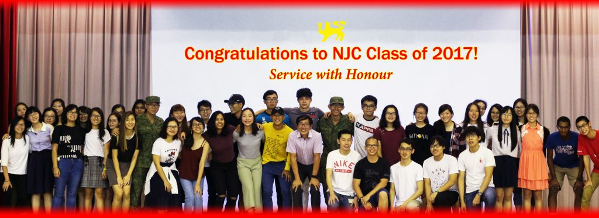
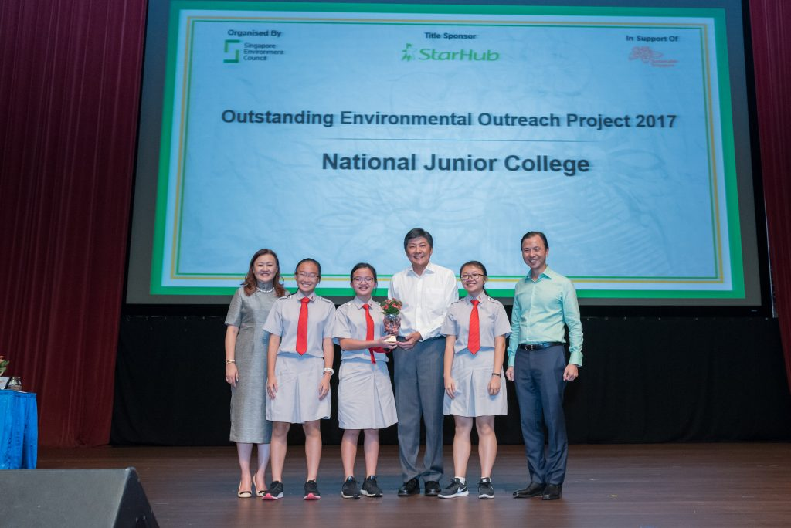
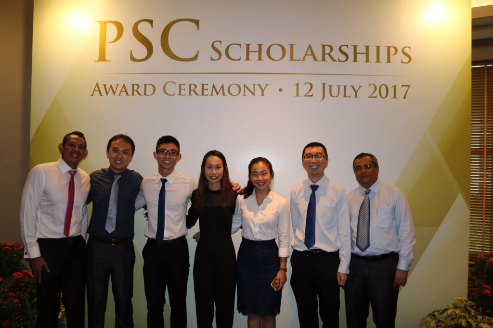
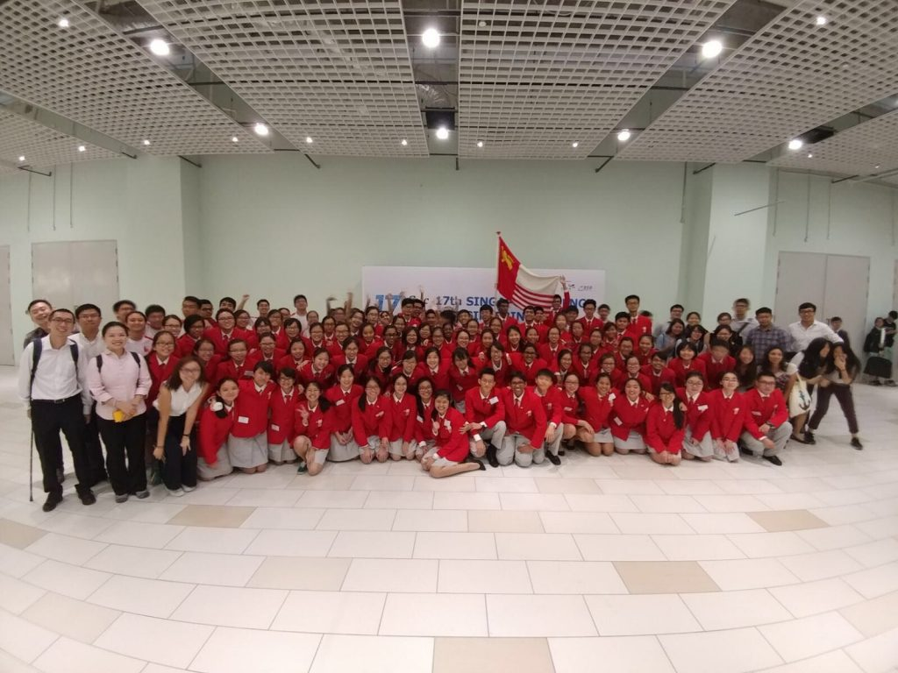

News
17
SEP
National Junior College warmly welcomes our overseas exchange guests from the United Kingdom
National Junior College warmly welcomes all our overseas exchange guests from Camborne Science and International Academy . Our guests will be here with us to participate in our International Research Exchange Programme, and also to enjoy the sights and sounds of our sunny island!
17
SEP
Project Cube/Roots – A tripartite partnership to build Singapore’s first urban agriculture research facility in a junior college
Life3 Biotech (Life3), Agri-Food & Veterinary Authority (AVA) and NJC have signed a Memorandum of Understanding to work collaboratively to establish Project Cube/Roots – Singapore’s first urban agriculture research facility in a junior college for research and development work on innovative, sustainable agri-tech solutions for the production of healthy food products. This tripartite partnership is the first of its kind between a local enterprise, government agency and academia that exemplifies the project’s shared vision of R.I.C.E – Research, Innovation, Community Engagement and Enterprise.
17
SEP
Mr William Phua: Recipient of the 2018 Science Mentorship Programme Outstanding Teacher-Advisor Award
We are happy to share that Mr William Phua is one of the four recipients of the 2018 Science Mentorship Programme Outstanding Teacher-Advisor Award! He has groomed many young scientists and researchers through his dedication towards his students and passion for the sciences. We will like to take this opportunity to thank our teachers and external research mentors for mentoring our students!
31
JUL
Congratulations to our Alumni, Emmanuel Lee Zong Wei and Calvin Heng Kee Hang, for Serving our Nation with Honour
09
JUL
National Junior College warmly welcomes all our overseas exchange guests
National Junior College warmly welcomes all our overseas exchange guest from Suzanne Cory High School, Chu Van An High School and Waseda University Honjo Senior High School. Our Australian, Japanese and Vietnamese guests will be here with us to participate in our inaugural Humanities Symposium 2018 held on 13 July, and also enjoy the wonderful experiences that our country offers!
09
JUL
2018 MOE PreU seminar student reflection
20 SH1 and SH2 students were selected to represent our school in the 2018 MOE Pre-University Seminar. From March to May, we went through a series of workshops, expert conversations, online discussions which accumulated to the final 4 days of Seminar at the end of May to 1 June.
This annual MOE Pre-University Seminar gave us an opportunity to collaborate with students from other JCs and Polytechnics to discuss issues pertinent to Singapore’s future. The theme for this year’s seminar is ‘#transformingourSG’, where we re-evaluate the practices and assumptions of the past and its relevant application to the future and explore innovative ideas to solve new problems.
We were also given the chance to listen to insights by the Minister for Education, Mr Ong Ye Kung and Minister in Prime Minister’s Office, Ms Indranee Rajah. It was interesting to view societal issues through the lens of a minister. We had the privilege to ask some of our questions to the ministers and understand their viewpoint on our thoughts. On the whole, the Pre-University experience was definitely an enriching one that I have fond memories of.
Written by Xavier Tham, 18SH09, NJC representative for 2018 MOE Pre-U Seminar
“The Pre-U Seminar was an eye-opening experience that exposes us to topics that we aren’t normally familiar with.”
Joel Goh, 18SH18, NJC representative for 2018 MOE Pre-U Seminar
“The exposure to working with many people from various institutions on this project was a challenge; the lack of a common timeslot or location for members to meet for discussions put our communicative skills to the test. The experience served to cultivate our teamwork skills.”
Crystal Chan, 18SH02, NJC representative for 2018 MOE Pre-U Seminar
09
MAR
2018 Singapore Science and Engineering Fair

NJCians have had an amazing run at Singapore Science and Engineering Fair (SSEF2018), with 68 shortlisted projects. In addition to clinching 6 Gold, 5 Silver, 4 Bronze, 6 Merit and 5 Special awards, for the 4th time, NJC students – Koo Weide & Kee Jin Wen – will be representing Singapore with their research work at the Intel Science & Engineering Fair at Pittsburgh, Pennsylvania this May. Emma Tan and Jenevieve Ho are awarded the Junior Scientist Award, with their project being selected to represent Singapore at the Broadcom Masters International Programme at Pittsburgh, Pennsylvania. Congratulations to all NJC participants, being shortlisted for SSEF is a testament to your effort!
Our stellar performance at SSEF is made possible by the hard work of our research students, research teachers and our external mentors! To all our research students, we hope you have had an enlightening research experience, and may you continue on in your research journey to contribute back meaningfully to the society.
Service with Honour
01
MAR
A-Level Results 2017

The Class of 2017 has done well. Two in 5 scored 85 A-level Points and above and 1 in 2 scored 82.5 and above. This year, we also have the highest number and percentage of students scoring Distinction or Merit in their H3 subjects: 9 in 10 scored Distinction or Merit; 6 in 10 scored Distinction.
For H2 subjects, 4 or more students in 10 scored A in Art, Biology, Chemistry, Computing, Economics, English Language and Linguistics, Further Mathematics, German, Literature in English, Mathematics, Physics, Tamil Language and Literature.
We look forward to the class of 2017 to continue to “serve with honour” and to add value to the lives of others. Your academic results must not define you. What kind of person you are years ahead would be most important and how NJC has imbued a deep sense of service to others is the marker for what we in NJC stand for.
Please take some time to appreciate and thank the ones who have contributed to your development and success: your teachers, parents and the wider NJC community.
12
JAN
Lotus Award
NJC received the Lotus Award in the SEC-Starhub School Green Awards 2017, recognizing efforts at the school infrastructure and curriculum levels to put in place eco-friendly practices. It also affirms staff and student groups, in particular, Green Link Club, in their green projects.
Green Link Club also received the Outstanding Environment Outreach Award for extending their vermicomposting knowledge beyond the college.
News article here!

23
DEC
2017 JH1 Registration Pre-Briefing
Download the 2017 JH1 Registration Pre Briefing slides here!
22
DEC
Secondary One Registration Day
NJC welcomes our 2018 Junior High One (JH1) Students.
The details of the programme:
| 7:45 a.m. to 8:30 a.m. |
Registration |
Canteen |
| 8:30 a.m. |
Welcome and Briefings |
NJC Hall |
| Purchase of Uniform, PE attire and books |
Various |
Attire: Primary School uniform
Parents must attend the session. For more information, please refer to page 9 of the MOE “Choosing your Secondary Schools for Admission to Secondary 1 in 2018” booklet that was given to you.
We looking forward to meeting with you!
06
DEC
PSLE students: Appeals for NJC IP Junior High 1 2018
Appeals for admission to NJC IP Junior High 1 2018 are now on!
The appeal period is from Mon 11 Dec 2017 to Tue 26 Dec 2017 3pm.
Only official online appeals within the appeal period will be accepted. Late appeals will not be entertained.
Please do NOT submit an appeal if you already have a place in another school under DSA, as it will not be accepted.
Please follow the instructions on the form for filling in your details, and for submission.
Please CLICK HERE for the online appeal form.
Upon submission of the online appeal, kindly submit a set of supporting documents (PSLE result, school results (P5 and P6 only), CCA records, and any certificates or testimonials) by 26 Dec 2017, 5pm to the General Office. Only appeals with supporting documents will be considered. Please note that documents without an online application will not be accepted.
You will be notified of appeal results latest by 29 Dec 2017. The school term begins on Monday 8 Jan 2018 for NJC.
Thank you.
13
JUL
Public Service Commission Scholarship (PSC) 2017
Our heartiest congratulations to our three PSC scholarship awardees from the Class of 2016! In a ceremony held at Grand Copthorne Waterfront Hotel, Lionel Oh Wei Hao (15SH03), Chu Sin Ping Natalie (15SH04) and Yeo Su Yia Denise (15SH08) received their awards in the presence of educators, families and friends. The College wishes them all the best in their studies and career in the public service.
Service with Honour.

07
JUL
Release of SH Common Test Results
Dear SH students and Parents, please note that the Common Test results have been uploaded onto LMS.
Please log in to retrieve the results. Thank you.
27
JUN
Congratulations to our Research@NJC Students for their outstanding performance at ISSF 2017!
Our Research@NJC students have done National Junior College proud at the recent ISSF 2017 held in Busan, Korea. Congratulations to Tan Yee Lin and Yalini Mohan Rajkumar who clinched the Most Creative Research Award under the Environmental Science and Future Energies category.
In addition, Chang Shi En obtained the Science Workshops Award for her team’s presentation at the “Alive 3D Printed Fractals” workshop.
Congratulations and well done!
03
MAY
Junior High Mid Year Assessment and Senior High Common Test
The College will be having Junior High (JH) Mid Year Assessment and Senior High (SH) Common Test from 03 May till 26 May.
Parents and Guardians of JH 3/4 and SH1/2 students may login to the College Learning Management System for more details.
Thank you.
05
APR
2017 DSA exercise for NJC 6-year Integrated Programme (IP) (for admission into AY 2018.)
NJC is currently reviewing our Direct School Admission (DSA) criteria. Information will be released on our college website in early May 2017.
Our School Tour (or Open House) is on Wednesday 17 May 2017, 2 to 6 p.m. Further details will be provided on the NJC website at http://nationaljc.moe.edu.sg nearer the date.
03
APR
Welcome to National Junior College, our friends from Mahidol Wittayanusorn School!
NJC welcomes 5 students and 1 teacher from Mahidol Wittayanusorn School who will be with us from 3rd April 2017 to 10th April 2017 as part of our International Research Exchange Programme. Have a lovely and joyful stay!
20
MAR
Congratulations to all our representatives for their commendable performance at the 20th National Olympiad in Informatics!
At this year’s NOI, 9 students from National Junior College clinched 2 silver and 6 bronze medals. Well done!
13
MAR
Congratulations to all Research@NJC Students for their outstanding performance at SSEF 2017!
This year, National Junior College Research@NJC students clinched 33 awards at the 17th Singapore Science and Engineering Fair – our largest haul ever
In addition, Paula Nazarene Evangelista Say of 16SH04 has been selected to represent Singapore at the Intel ISEF 2017 at Los Angeles, California. Her project is one of the 6 projects to represent Singapore at this prestigious competition.
Congratulations to all the Research@NJC Students!

24
FEB
2016 GCE A-Level Results
We would like to commend the performance of Class of 2016.
Find Out More
1. All H2 Subjects have at least 99% Passes
2. H2 Subjects with at least 50% Distinctions
• Art
• Chinese Language & Literature
• Economics
• French
• German
• History
• Knowledge & Inquiry
• Mathematics
• Physics
• Tamil Language & Literature
3. Outstanding Students in Science Course
• Arnav Shirodkar
• Bai Sin Yeou
• Chua Chia Woon Eunice
• Doreen Khin Zaw
• Janice Lee Jia Yi
• Koo Ruey Yi
• Lee Ying Xi
• Leong Wei Lyn Natalie
• Peng Zhenyan
• Teh Nian Fei
• Terence Ho Wei Yang
• Wang Yuhang
• Wu Jiarui
• Yew Jen Khai
• Yu Haoran
• Zhou Ze Gang
4. Outstanding Students in Arts Course
• Chew Wen Qi Ashley
• Teo Sze Anne
• Mohamed Hafiz B Mohamed J
• Claire Tan Su Yin
• Prairie Soh Huei Yee
• Poornima D/O Guru
• Thean Xu Zi Hilary
• Foo Ai Luan
• Toh Jia Qi Andrea
• Jade Yong Yu Jia
5. Outstanding Students in Research
• Panicker Karthik Shreekumar
• Tan Hwee Ling Sharon
• Teh Nian Fei
• Wang Yuhang
• Shen Zhouyu
• Sherwin Warwick Da Cruz
• Yew Jen Khai
• Milla Samuel
• Chu Sin Ping Natalie
• Yip Jia Yun
• Lee Eik Cheong
• Revathi D/O Manoharaan
6. Outstanding Student Leaders
• Milla Samuel
• Tan Hwee Ling Sharon
• Lim Bo Min
• Yu Haoran
• Lai Li Shuen Candice
• Lionel Oh Wei Hao
• Wang Yuhang
• Lee Ying Xi
• Fan Kaiqi
• Selina Fang Jialin
• Leong Wei Lyn Natalie
• Charmaine Chua Qi Shan
• Chen Xing Sheng
• Lim Si Yuan Hazel
• Mohamed Hafiz B Mohamed J
• Tan Jia Ying Jasmine
• Natalie Wong Jiayi
• Wu Jiarui
• Lee Eik Chong
7. Outstanding Students in Sports & Games
• Yip Jia Yun (Track & Field)
• Chu Sin Ping, Natalie (Track & Field)
• Zhan Haohan (Table Tennis)
• Daniel Goh Wen Xiang (Floor ball)
• Tan Ying Rui (Canoeing)
8. Outstanding Students in Performing Arts
• Peng Zhenyan (CO&GZ)
• Janice Lee Jia Yi (CO&GZ)
• Zheng Shanshan (CO&GZ)
• Janis Teo Ruimin (Guitar Ensemble)
• Eunice Chua Chia Woon (Guitar Ensemble)
• Doreen Khin Zaw (Guitar Ensemble)
• Liu Bingru (Malay Dance)
• Prairie Soh Huei Yee (ELDDS)
• Arnav Shirodkar (Symphonic Band)
9. Outstanding Students in Clubs & Societies
• Zhou Zegang (Aesthetics Club)
• Terence Ho Wei Yang (OAC)
• Bai Sin Yeou (BIZTECH)
• Shi Fanfei (CLDDS)
• Li Yuting (Mathematics Society)
• Teo Sze-Anne (POLITICAS)
• Chew Wen Qi Ashley (Green Link)
• Lester Ng Keng Hui (Public Address)
• Revathi Manoharaan (ILDDS)
• Neo Zhi Xian (Science & Technology)
10. 7 Distinctions or More
• Milla Samuel
• Zhang Shaojie
• Peng Zhenyan
• Yu Haoran
• Zhao Zhanglei
• Doreen Khin Zaw
• Chu Sin Ping Natalie
• Koo Ruey Yi
• Lee Ying Xi
• Wang Yuhang
• Yip Jia Yun
• Leong Wei Lyn Natalie
• Arnav Shirodkar
• Yew Jen Khai
• Li Yuting
• Terence Ho Wei Yang
• Qiu Yiming
• Wu Jiarui
• Zhang Haohan
• Zheng Wenwen
• Zhou Zegang
• Bai Sin Yeou
• Revathi D/O Manoharaan
• Chua Chia Woon Eunice
• Janice Lee Jia Yi
• Teh Nian Fei
Read More Here!


23
DEC
2017 JH1 Students and Parents Briefing Slides
Dear 2017 JH1 Students and Parents,
Click here to download the Powerpoint Slides during the JH1 Registration on Thursday 22 Dec 2016.
Thank you.
30
NOV
PSLE students: Appeals for NJC IP Junior High 1 2017
Appeals for admission to NJC IP Junior High 1 2017 are now on!
The appeal period is from Mon 5 Dec 2016 to Thu 22 Dec 2016 3pm.
Only official online appeals within the appeal period will be accepted. Late appeals will not be entertained.
Please do NOT submit an appeal if you already have a place in another school under DSA, as it will not be accepted.
Please follow the instructions on the form for filling in your details, and for submission.
Please CLICK HERE for the online appeal form.
Upon submission of the online appeal, kindly submit a set of supporting documents (PSLE result, school results (P5 and P6 only), CCA records, and any certificates or testimonials) by 22 Dec 2016, 5pm to the General Office. Only appeals with supporting documents will be considered. Please note that documents without an online application will not be accepted.
You will be notified of appeal results latest by 30 Dec 2016. The school term begins on Monday 9 Jan 2017 for NJC.
Thank you.
13
SEP
Outstanding Performance at the 2016 Amazing Science X Challenge
Congratulations to Looi Kai Wen, Sherwin Warwick Da Cruz and Guan Wei for their Gold Medal winning performance at the 2016 Amazing Science X Challenge. The three students designed and built a spectrophotometer that was almost just as good as a UV/vis spectrometer in the laboratory.
Find Out More
Congratulations to Looi Kai Wen, Sherwin Warwick Da Cruz and Guan Wei for their Gold Medal winning performance at the 2016 Amazing Science X Challenge. The three students designed and built a spectrophotometer that was almost just as good as a UV/vis spectrometer in the laboratory.
23
MAY
Outstanding performance at the 2016 INTEL International Science and Engineering Fair!
Congratulations to Wang Yuhang, Jia Shuyi and Sim Yu Ki.
Find Out More
Congratulations to Wang Yuhang, Jia Shuyi and Sim Yu Ki for their outstanding performance at the 2016 INTEL International Science and Engineering Fair!
This year, an unprecedented 3 NJC students were selected to represent Singapore at the 2016 INTEL ISEF, held at Phoenix, Arizona. All 3 NJC students bagged various awards at the 2016 INTEL ISEF. The MOE press release can be found here.
23
MAY
Outstanding Performance at the 2016 A*STAR Talent Search (ATS)
Congratulations to Victoria Emily Hui Ting Buckland (First Prize Award), Wang Yuhang (Commendation Award) and Sim Yu Ki (Commendation Award)
Find Out More
Congratulations to Victoria Emily Hui Ting Buckland (First Prize Award), Wang Yuhang (Commendation Award) and Sim Yu Ki (Commendation Award) for their outstanding performance at the 2016 A*STAR Talent Search (ATS).
The performance of our 3 students placed National Junior College as the top performing school at the 2016 ATS. More information about the winners and their projects can be found here.
23
MAY
Congratulations to all Research Students for their outstanding performance at the 2016 SSEF!
An unprecedented 27 awards were presented to National Junior College Research students at the 2016 Singapore Science and Engineering Fair (SSEF). Congratulations to all Research Students for their outstanding performance at the 2016 SSEF!
Find Out More
An unprecedented 27 awards were presented to National Junior College Research students at the 2016 Singapore Science and Engineering Fair (SSEF).
Congratulations to all Research Students for their outstanding performance at the 2016 SSEF!
28
MAR
National Schools Cross Country Championships
We congratulate the Cross Country team in their individual (Top 20) and A Div Girls Overall 3rd Team win in the National Schools Cross Country Championships last week!
Find Out More
We congratulate the Cross Country team in their individual (Top 20) and A Div Girls Overall 3rd Team win in the National Schools Cross Country Championships last week!
A Boys
12th Terry
16th Alden
A girls (Team Overall 3rd)
8th Valencia
10th Ashley
16th Tay Jin Wen
B Girls
19th Nicole Lee
20th Sylvia Yap<
15
MAR
Singapore Science and Engineering Fair (SSEF)
In this year’s Singapore Science and Engineering Fair (SSEF), an unprecedented 62 NJC projects were selected to be presented at SSEF finals at the Singapore Science Centre. SSEF is a national competition organized by MOE, Science Centre and A*STaR and is directly affiliated to the Intel International Science and Engineering Fair (ISEF), which is regarded as the Olympics of science competition.
Find Out More
It is with great pleasure that I would like to announce the outstanding success achieved by our students at this year’s SSEF!
This year, our school clinched a total of 27 awards (this puts us as the school with the highest number of awards in the nation for SSEF 2016); 7 Merit, 7 Bronze, 4 Silver, 5 Special awards and 4 Gold!
Such a tally is definitely one that is unparalled in our years of participation and one that is highly encouraging to research here in NJC. Out of the 6 projects that were selected to represent Singapore at Intel ISEF 2016 at Phoenix, USA, 3 projects from NJC have been selected to represent Singapore at this prestigious competition!
These are the 3 students that have been selected:
(1) Jia Shu Yi (15SH01) who presented on Linking of Printable Molecules onto Silicon Substrates.
(2) Sim Yu Ki (15SH08) who presented on Development of Electrochemically-Active Nano-particles for use in an Electrochemical Lateral Flow Biosensor for Dengue Diagnosis.
(3) Wang Yu Hang (15SH04) who presented on Exploring the Application of Nickel Hydroxide Thin Film in Waste Water Treatment.
At this juncture, i would like to thank the many teachers and staff that have contributed to this tremendous success in one way or another.
04
MAR
GCE A Level Results for NJC Class of 2015
Congratulations to the NJC Class of 2015, who have done well across diverse disciplines, in particular in research and the H3 subjects.
Find Out More
GCE A Level Results for NJC Class of 2015
Congratulations to the NJC Class of 2015, who have done well across diverse disciplines, in particular in research and the H3 subjects.
At the same time, the experiences in character and leadership building, as well as deep commitment to Co-curricular Activities, have no doubt complemented the stellar academic performance.
We wish every 2015 graduate all the best for a bright future!
Click this link to see the results.
03
MAR
Release of GCE A Level Results
Dear 2015 SH2 students, The 2015 GCE A Level results will be released on 4 Mar (Fri). We welcome you back to NJC!
Find Out More
Release of GCE A Level Results
Dear 2015 SH2 students,
The 2015 GCE A Level results will be released on 4 Mar (Fri). We welcome you back to NJC!
Please proceed to the HALL by 2.30pm to collect your results and attend some briefings.
If you have outstanding payments of fees, kindly settle the payments at the Student Services Centre before 2.30pm.
All the best for your results and we look forward to see you!
NJC Admin Office
11
JAN
Sec 4 Students (JAE -JC)
The Joint Admissions Exercise (JAE) is an annual exercise conducted by the Ministry of Education (MOE)….
Find Out More
Joint Admission Exercise to JC Programme for Sec 4 students The Joint Admissions Exercise (JAE) is an annual exercise conducted by the Ministry of Education (MOE). It allows holders of the Singapore-Cambridge GCE ‘O’ Level results to apply for admission to courses offered in the junior colleges (JC), centralised institute (CI), polytechnics (Poly) and Institute of Technical Education (ITE). The JAE usually takes place in January, after students receive their GCE ‘O’ level examinations results. JAE application is done through the internet. Students admitted to our College under this exercise will secure a place in our JC1 cohort.
Click here for more details.